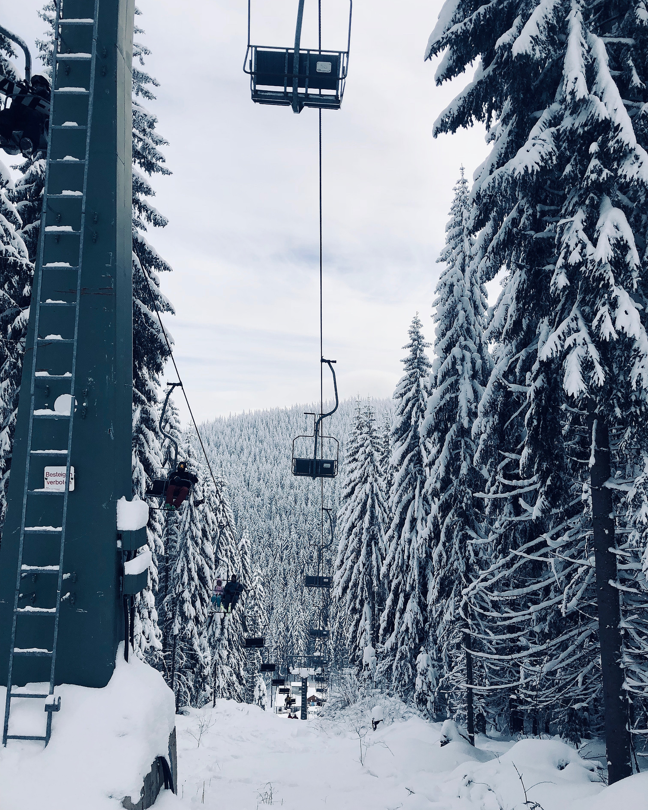

with snow in mind
Top 10 ski destinations in Europe

Read about the top 10 of ski resorts from Ski solution. The best after-ski, coolest hang outs and off course all you need to know about snowy slopes and epic mountain viems! Whatever you are after, it can go wrong with this inspiring list.

Food and restaurants
Here you can find all the tips where do eat and drink from the latest top 10 list
Safety
Always remeber to click here for the latest and safiest updates when it comes to snowfall, wind and avalach danger

Blog & pod
Read and listen to diffrent freeriders and get inspired by their adventures

Ski gear
We have tested the lastest gear for the season, from beginners to advanced, in diffrent price levels..